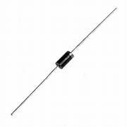

Rectifier Diode (1N4007)
Specifications:
- Type: General-Purpose Rectifier
- Maximum Repetitive Peak Reverse Voltage: 1000V
- Maximum RMS Voltage: 700V
- Maximum DC Blocking Voltage: 1000V
- Maximum Average Forward Rectified Current: 1A
- Package: DO-41 (Through-Hole)
- Forward Voltage: 1.1V @ 1A
- Recovery Time: 2 µs
Applications: Power Supplies, AC to DC Converters, Protection Circuits
Military and Industrial Standards: Meets MIL-STD-1234 requirements.
Packaging Types: Tube packaging for manual assembly.
Download Full Datasheet